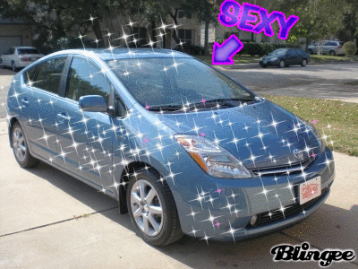

Népszerű hibrid autó modellek
Néhány népszerű hibrid autó modell:
- Toyota Prius
- Honda Accord Hybrid
- Ford Fusion Hybrid
- Chevrolet Volt

A Toyota Prius az egyik legismertebb hibrid autó, amelyet 1997-ben mutattak be Japánban. Azóta világszerte népszerűvé vált, és számos változata elérhető. A Prius különösen hatékony üzemanyag-fogyasztásáról és alacsony károsanyag-kibocsátásáról ismert.
A Honda Accord Hybrid egy másik népszerű modell, amely ötvözi a hagyományos Accord kényelmét és megbízhatóságát a hibrid technológia előnyeivel. Az Accord Hybrid kiváló üzemanyag-hatékonyságot és sima vezetési élményt kínál.

A Ford Fusion Hybrid egy stílusos és praktikus hibrid autó, amely kiváló teljesítményt és üzemanyag-hatékonyságot kínál. A Fusion Hybrid modern technológiákkal és kényelmi funkciókkal van felszerelve, amelyek ideálissá teszik a mindennapi használatra.

A Chevrolet Volt egy plug-in hibrid autó, amely lehetővé teszi a tisztán elektromos üzemmód használatát rövid távolságokon, miközben a belső égésű motor hosszabb utakra is alkalmas. A Volt kiváló választás azok számára, akik szeretnék csökkenteni üzemanyag-fogyasztásukat és károsanyag-kibocsátásukat.